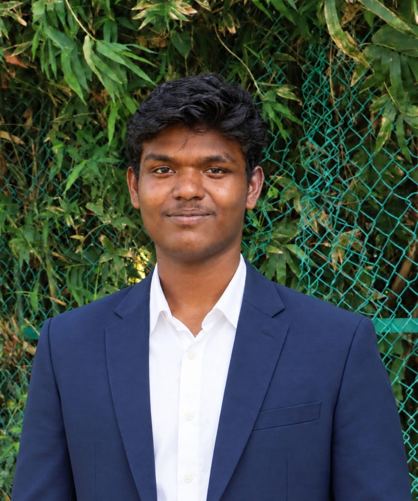

About

- Based in
- Chennai, Tamil Nadu
- Studying
- B.Tech, AI & Data Science, Chennai Institute of Technology
- Open to
- Freelance projects, internships and full-time roles
I'm Nithin, an AI & Data Science student at Chennai Institute of Technology who builds secure, intelligent systems end to end.
I like owning the whole path, from training the model to wiring up the backend. The part I obsess over is the last one: the interface. Spacing, type, motion, how a button feels when you press it. A great model is wasted behind a confusing screen. MedSafe is a good example. It reads prescriptions with a Gemini OCR pipeline, checks for dangerous drug combinations, and keeps every record encrypted on the user's own device.
Outside of client and internship work, I help run the GDG community at CIT, contribute to GSX Chennai, and compete in hackathons. Most recently I made the national top 7 at a computer vision hackathon at RVCE Bengaluru.
Right now I'm digging into scalable microservices, vector databases and vision transformers.
What I can build for you
- Interfaces people enjoy using. Fast, responsive React and Next.js frontends with clean layouts, smooth motion and accessibility built in. You're scrolling through one.
- AI features that work in production. OCR, chat, classification and computer vision, built on Gemini, PyTorch or OpenCV.
- Full-stack web apps. From the database to the deploy, built to stay fast and easy to maintain.
- Secure systems. Client-side encryption, audit trails and safe handling of sensitive data.
- Dashboards and internal tools. Turning spreadsheets and manual processes into clean web apps.
Skills
Frontend & interface design
- React 19
- Next.js
- Tailwind CSS
- Framer Motion
- Canvas animation
- Responsive design
- Accessibility
- Design systems
- Micro-interactions
- HTML5
- CSS3
Languages
- Python
- TypeScript
- JavaScript
- Java
- SQL
AI & computer vision
- PyTorch
- TensorFlow
- OpenCV
- Gemini API
- NumPy
- Pandas
- Vector databases
Backend & data
- Node.js
- Express.js
- Firebase
- Supabase
- MongoDB
- MySQL
Cloud & tools
- AWS
- Docker
- Linux
- Git
- Vercel
Security
- AES-256 / RSA encryption
- Zero-knowledge design
- SHA-256 audit trails
Proof, not promises
Projects
-
MedSafe
A medical records locker with client-side encryption, a Gemini OCR pipeline that reads prescriptions, and drug contraindication checks.
GitHub ↗ -
Argus Ledger
An open-source security layer for AI agents. It screens risky actions like money transfers, then allows, escalates or blocks them with a plain-English reason, on a tamper-evident SHA-256 audit trail.
GitHub ↗ -
ClinicQ
OPD queue management for Indian clinics: a reception console and a patient portal with live wait times, voice announcements, priority triage and 13 languages.
Live ↗ Masked face recognition
A real-time pipeline that identifies people even when they're wearing face masks.
Case study soon-
Chennai Metro ML
Machine learning on Chennai Metro data, shipped as a live web app.
Live ↗ -
FinSecure
A security-first personal finance web app.
Live ↗ -
GDG CIT Web Platform
The official platform for the Google Developer Groups chapter at CIT, with event registration and student member dashboards.
Live ↗ -
GSX Chennai Chapter
The official site for the GSX open-source community's Chennai chapter.
Live ↗
Experience
-
Current
Core Team Member GDG CIT, Google Developer Groups
Help run the campus developer community at Chennai Institute of Technology: workshops, tech talks and hackathons. Built the chapter's web platform with event registration and member dashboards.
-
Current
Member GSX Chennai Chapter
Contribute to the GSX open-source community and built and maintain the Chennai chapter's website.
-
Volunteer
Project Officer TN Volunteers
Plan and coordinate volunteer projects across Tamil Nadu.
-
Internship
Web Developer Intern DYNX Solutions
Built and shipped websites and web app features for DYNX Solutions clients.
-
Internship
Software Developer Intern UMS Scales
Building UMS Books, an online accounting platform for businesses covering invoicing, expenses and financial reports.
-
Internship
AI/ML Intern Google for Developers
Worked on applied machine learning projects through the Google for Developers internship program.
-
Internship
Cloud Intern AWS Educate
Built and deployed cloud workloads on AWS through the AWS Educate internship program.
Got something to build?
I take freelance projects in AI features, web apps and dashboards, and I'm open to internship and full-time interviews.